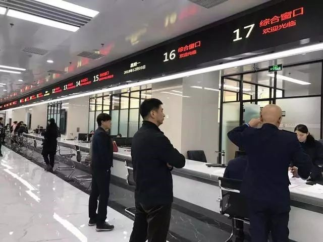

东城政务服务中心改造升级全新亮相
来源：北京东城
经过半年的升级改造，面积翻了一倍的东城区政务服务中心从今天开始以全新面貌正式对外办公，整个东城区38个部门全部入驻，可办理717个具体事项。记者今天上午第一时间对改造一新的东城区政务服务中心进行了探访，发现过去需要跑不同窗口才能办成的事务如今在一个综合窗口即可办完，新增的自助服务区还实现了全年无休靠人工智能实时办事。
面积翻倍
38个部门717事项全能办
由于处在金宝街这一寸土寸金的地界，受到空间和面积的局限，过去，东城区政务服务中心的对外办公面积只有3000多平方米，17个部门集中在整栋大楼的一至三层，一共可以办理200多个具体事项。
“过去，很多事项没有集中，都在外面分散着。”今天上午，东城区政务服务中心副主任于晓红告诉记者，比如商务委、司法局等部门，过去都将办事窗口设立在了各个委办局内，市民想要办理相关的事项，就必须挨个跑到各个委办局去。
怎么能让办事更加集中，“进一门”就能办理所有的事项呢？为此，东城区从今年5月起，开始对位于金宝街的政务服务中心进行全面改造升级。记者发现，如今，东城区政务服务中心的一、二、三、五层全部被设为对外办公空间，面积翻了一倍，变成6000多平方米。此外，整个东城区38个部门的717项审批事项和公共服务事项，除了一些专业大厅之外的，全部纳入到了政务服务中心内。
一个窗口办所有事务
无声叫号短信提醒
不仅如此，办事模式也发生了改变，便捷高效成了今天前来办事市民的第一感觉。
“以前，各委办局单独设立办事窗口，需要办理哪个委办局的事项，就要去哪个委办局的窗口。”于晓红介绍说，而现在，取消了委办局“各自为政”的窗口，改成了“综合窗口”。实行的是“前台综合受理、后台分类审批、统一窗口出件”的新模式。于晓红举例说，比如，过去市民如果想开个餐馆，可能需要到工商、食药、卫生等多个部门的窗口办理不同的手续，而如今，市民只需要到一个“综合窗口”递交相关材料后，工作人员就会在后台“跑起来”，市民在一个窗口就能办理所有的事项。
一进中心的大门，记者便发现，办事市民全部先聚集到取号机进行取号。“以前的取号机都是各个委办局自己设立的，比如，这台机器是工商设的，那台是税务设的。现在，取号机是由政务服务中心统一设立的，一个号对应的是一个办事窗口。”于晓红表示，办事市民进门先到取号机上取号，工作人员和打印出的号牌上会明确告诉您，到哪个窗口去办理您的事务。在指定的窗口递交相关材料后，市民就可以在等候区稍事休息，而内部的工作人员则开始在后台忙着为您办理事务了。
记者在大厅发现，除了办事窗口传出轻声话语外，整个大厅显得十分安静，昔日嘈杂的“叫号声”听不到了。于晓红说，过去大厅采取的是“电子叫号”的方式，电子喇叭里不停滚动叫号，整个大厅乱哄哄的。而升级改造后，大厅已经改成了“无声叫号”的新模式。什么是“无声叫号”呢？记者发现，在办事窗口旁，每隔一段距离，便竖立起一块蓝色的电子显示屏，原来这是新配备的“政务服务大厅电视叫号”机，上面实时滚动着最新的叫号顺序，告诉市民按照取号机上的号码到哪个窗口办理事务。除此之外，还有“短信叫号”，用短信的形式随时通知市民前面还有多少人正在排队，轮到您去窗口办理事务了，也会实时短信通知。
市民在等候区等待时，也不用担心无聊，新升级改造的政务服务中心新增了不少便民设施。一层和三层均设立了休闲区，能够提供现磨咖啡的咖啡机正飘出阵阵咖啡香。服务台能够提供充电宝等便民小物件，一层还设立了图书角和上网区。
稍待片刻，当手机上接到短信通知后，市民只要到统一的取件窗口来领件即可。即使当天来不及等待取件，市民也可以选择邮寄服务，由邮政快递送件上门。
记者发现，大厅中还特别开辟了“新设企业专区”。于晓红说，有了这个专区，市民想新办企业，从递交材料，到工商、税务、银行、一证通等等事项办理，到最后领取证照、拿到发票，只需要3天的时间即可办成。而过去，想要办下来这么一套手续，往往需要20多天的时间。“大大提速增效了。”
自助机全年无休
申报取件可全靠人工智能
“说到新增的项目，中心设立了独一无二的自助服务区，7×24小时无间断服务。”在中心工作人员的引领下，记者来到了一间靠墙摆满自助服务机的房间。
工作人员介绍说，如今，这个自助服务区已经集纳了工商、税务的自助服务机，比如这台机器是工商用来打印营业执照的，这台是用来工商档案查询的自助服务机器，这台机器可以查询税务的完税证明等。后续，这个区域还将增加公安出入境、人力社保、银行等自助服务机。

工作人员带记者走到两台配有文件柜的少见机器前，原来，这是东城区现在唯一启用的两台政务服务自助机。政务服务中心内的所有717项事务都可以在这两台机器上自助查询、自助申报、自助完成，即使工作人员下班了也不用担心，全年无休的自助机全部可以代办。
工作人员一边现场演示，一边解释说，比如，您在白天的工作时间无法来中心办理事务，那么就可以晚上下班后，携带相关的申报材料，来自助申报和办理。首先，要在自助机上扫描身份证，进行人脸识别，然后将申报材料上传，网盘、U盘和纸质版都能在这台机器上完成上传。待第二天正常工作时间，工作人员将第一时间从机器中取出材料进行审批，审批办理完成后，就可以下班后到自助区来自行取件。“上班时间办不了的事，通过这个自助服务区，下班时间全能办，就跟在快递柜寄快递和收快递有点类似。”